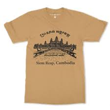
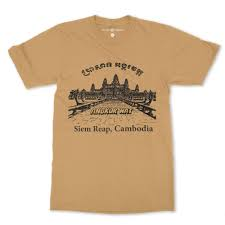

ហាងលក់សម្លៀកបំពាក់ប្រពីណៃ
Traditional Khmer clothing is both beautiful and functional. The styles have been shaped by Cambodia’s hot tropical climate, as well as its cultural traditions. Both men and women wear
loose, lightweight clothing made of natural fibers and natural material like cotton or silk. Bright colors and intricate details showcase the skill of Khmer weavers and tailors. The most well-
known traditional garment is the sampot, a wrap-around lower garment worn by both men and women. The sampot phamoong, worn by women, is a rectangular fabric wrapped around the
waist and pinned at the top to create a skirt. Men wear the sampot kben, which is tucked in and held up by a belt called a krama. The sampot comes in colorful checkered patterns or colorfu
floral silk brocades.
សំពត់-sompot
The sampot chang kben is a full, ankle-length skirt. It’s made of silk and decorated with floral or geometric patterns. Women wear this for special occasions like weddings or festivals. The
sampot chang phnom is a knee-length cotton skirt. It’s more casual and worn for everyday activities. The sampot is wrapped around the waist and secured in place with a belt called a
kroma.


ក្រមា-kroma
A kroma is a checkered scarf that serves many purposes in Khmer clothing. Women use it as a belt to hold the sampot in place. Men wear the kroma around their waist or neck. The kroma
also has many practical uses, like as a towel, basket, or hammock. They come in red, blue or green checkered patterns.


The Angkor shirt is a loose-fitting silk or cotton button-down shirt. It’s worn by both men and women, and often paired with trousers or a sampot. Angkor shirts feature delicate embroidery
especially around the collar and cuffs. They are popular souvenirs for tourists visiting Cambodia.


អាវអង្គរ-angkor Shirth
The Angkor shirt is a loose-fitting silk or cotton button-down shirt. It’s worn by both men and women, and often paired with trousers or a sampot. Angkor shirts feature delicate embroidery
especially around the collar and cuffs. They are popular souvenirs for tourists visiting Cambodia.
 
